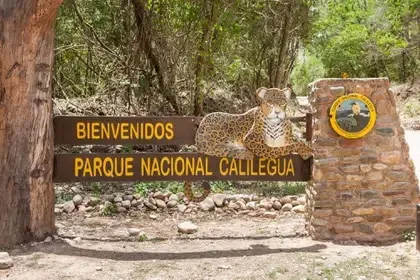

Atracciones Turisticas de Jujuy
Serranías del Hornocal
La Serranía del Hornocal es una formación geológica que se destaca por sus diferentes tonalidades de colores. Por este motivo se la conoce también como el Cerro de los 14 Colores.
Purmamarca
Si bien Purmamarca es considerado un pueblo de paso, cada día son más los turistas que eligen hacer noche en el pueblo y conocer sus alrededores.

Salinas Grandes
Las Salinas Grandes con sus asombrosos paisajes se convirtió es uno de los destinos imperdibles de la provincia. Para llegar se debe atravesar la Cuesta de Lipán con sus hermosos paisajes.

Ver más
Parque Nacional Calilegua
La ciudad más cercana al parque nacional es Libertador General San Martín. La ruta provincial 83 atraviesa todo el Parque Nacional Calilegua y llega a la localidad de San Francisco.